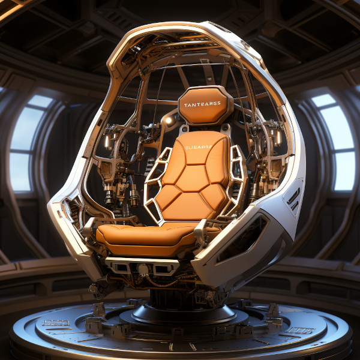

Item/Artifact: Nodus Interstellar Communicator

Figure 1: Nodus Interstellar Communicator
Description
The Nodus Interstellar Communicator is a state-of-the-art device designed to facilitate real-time communication across different time dilation zones. It features an advanced design with sleek, modular components that ensure efficient and effective operation.
Origins
Creation
Developed by the leading technology conglomerate, Quasar Dynamics, in the year 2587 to address the challenges of interstellar communication.
Historical Significance
The Nodus Communicator revolutionized interstellar relations, making it possible for civilizations in vastly different time dilation zones to maintain meaningful contact.
Abilities and Powers
Technological Features
- Linker: Creates a quantum link between the caller and receiver, forming a complete particle replica of the caller. This allows for the transmission of all bodily sensations, including hearing, seeing, touching, and tasting.
- Dilation Module: Syncs the time dilation of the caller to that of the receiver. In cases of extreme dilation differences, the receiver can also adjust their dilation, ensuring a stable medium for communication.
- Lorenza Corrector: Adjusts and stabilizes time dilations, particularly useful during hyperspace travel where dilations fluctuate. It has a maximum threshold, beyond which correction is abandoned to prevent disruptions.
- Kill Switch: Disconnects the quantum link if harmful transmissions are detected or when the Lorenza Corrector exceeds its maximum setting. It ensures the safety and integrity of both parties during communication.
Usage
Current Owner
Widely used across interstellar civilizations, with major organizations and governments employing it for diplomatic and operational purposes.
Past Owners
Initially used by Quasar Dynamics and its affiliated research teams during the development and testing phases.
Purpose
Primarily used for real-time communication across different time dilation zones, ensuring seamless interaction between parties despite temporal disparities.
Mysteries and Lore
Legends
Some believe the Nodus Communicator has capabilities beyond its known functions, such as interdimensional communication, but these remain unconfirmed.
Unresolved Mysteries
There are rumors of a prototype with enhanced features that was lost during an experimental hyperspace jump.
Prophecies
A legend suggests that the Nodus Communicator will play a pivotal role in uniting scattered human colonies across the galaxy during a future crisis.
Impact on the World
Cultural Significance
Seen as a symbol of unity and progress, the Nodus Communicator is celebrated in various cultures for its role in bridging vast distances.
Societal Changes
Facilitated the development of interstellar governance, commerce, and social interactions, fundamentally transforming how civilizations interact across the galaxy.
Relationships
Characters
- Dr. Elara Voss: Lead scientist in the development of the Nodus Communicator, renowned for her contributions to quantum communication.
- Admiral Kiros Han: Utilized the Nodus Communicator to coordinate the defense of the Andromeda Outpost during the Galactic Siege.
Events
- Galactic Treaty of 2595: The Nodus Communicator was instrumental in the negotiations, allowing real-time discussions between leaders from different star systems.
Locations
- Quasar Dynamics Research Facility: The primary location where the Nodus Communicator was developed and tested.
Seeds
| Category | Seed Identifier | Description |
|---|---|---|
| Item/Artifact | s4000 | Nodus Interstellar Communicator |
| Related Char. | s1001 | Dr. Elara Voss |
| Related Char. | s1002 | Admiral Kiros Han |
| Event | s3001 | Galactic Treaty of 2595 |
| Location | s2001 | Quasar Dynamics Research Facility |